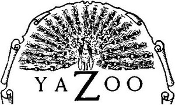

홈 > 브랜드 매거진 > Discovery Records
Discovery Records
디스커버리 레코드(Discovery Records)는 1948년 앨버트 마르크스가 미국 할리우드에서 설립한 재즈 레이블이다. 아트 페퍼 등의 녹음을 남겼으며 이후 사이어/워너 계열로 흡수됐다.
산업 분야 미디어·엔터테인먼트 · 공개 등급 디렉토리 · 브랜드 평가 3.2 ★
한눈에 보는 브랜드
디스커버리 레코드(Discovery Records)는 1948년 앨버트 마르크스가 미국 할리우드에서 설립한 재즈 레이블이다. 아트 페퍼 등의 녹음을 남겼으며 이후 사이어/워너 계열로 흡수됐다.
브랜드 관점
디스커버리 레코드는 아트 페퍼 등의 녹음을 남긴 미국의 재즈 레이블이었다. 설립·운영 주체, 주력 장르, 대표 아티스트를 함께 보면 미디어·엔터테인먼트 안에서의 위치가 또렷해진다.
시작과 성장
1948년 앨버트 마르크스가 할리우드에서 설립했다. 아트 페퍼, 디지 길레스피 등 재즈 녹음을 발매했으며 마르크스 사후 1991년 매각을 거쳐 1996년 사이어 레코드에 흡수됐다.
브랜드 아이덴티티
Discovery Records의 아이덴티티는 브랜드명, 로고 사용 여부, 업종 언어, 국가적 배경을 중심으로 정리됩니다. 공개 로고 자산은 추후 권리 확인 후 보강할 수 있도록 텍스트 메타데이터 중심으로 관리합니다.
확장 지식
재즈 레이블로 이후 사이어/워너 계열로 흡수됐다.
제품과 서비스
재즈 음반을 발매했다. 아트 페퍼 '디스커버리 세션스' 등이 대표적이다.
사람들
앨버트 마르크스가 1948년 할리우드에서 설립했다.
현재 상태
타임라인
정리된 연도형 이벤트가 없습니다.
BI/CI 변천사
확인된 BI/CI 이미지가 아직 없습니다.
함께 읽을 브랜드
 미디어·엔터테인먼트 · 디렉토리사이어 레코드
미디어·엔터테인먼트 · 디렉토리사이어 레코드사이어 레코드(Sire Records)는 1966년 시모어 스타인과 리처드 고터러가 미국 뉴욕에서 설립한 음반 레이블이다. 라몬즈·토킹 헤즈·마돈나를 배출한 뉴웨이브...

미디어·엔터테인먼트 · 디렉토리Yazoo Records야주 레코드(Yazoo Records)는 1968년 수집가 닉 펄스가 미국에서 설립한 전전(戰前) 블루스 재발매 레이블이다. 1920~30년대 블루스 녹음을 복각해...
미디어·엔터테인먼트 · 디렉토리할리우드 레코드할리우드 레코드(Hollywood Records)는 1989년 월트디즈니컴퍼니가 설립한 미국의 음반 레이블이다. 디즈니 뮤직 그룹 산하로 팝·록·얼터너티브를 다루며...
미디어·엔터테인먼트 · 디렉토리Equal Vision Records이퀄 비전 레코드(Equal Vision Records)는 1991년 레이 카포가 미국 뉴욕주 올버니에서 설립한 하드코어 레이블이다. 포스트하드코어·하드코어를 대표하...
미디어·엔터테인먼트 · 디렉토리Kung Fu Records쿵푸 레코드(Kung Fu Records)는 1996년 더 밴댈스 멤버인 조 에스칼란테 등이 미국 캘리포니아에서 설립한 펑크 레이블이다. 디 아타리스 등을 배출한 독...
미디어·엔터테인먼트 · 디렉토리애플 레코드애플 레코드(Apple Records)는 1968년 비틀즈가 설립한 영국의 음반 레이블이다. 애플 코어(Apple Corps) 산하 레이블로 비틀즈의 음반과 메리 홉...
미디어·엔터테인먼트 · 디렉토리Chesky Records체스키 레코드(Chesky Records)는 1986년 데이비드·노먼 체스키 형제가 미국 뉴욕에서 설립한 오디오파일 음반 레이블이다. 고음질 재즈·클래식 녹음으로 알...
미디어·엔터테인먼트 · 디렉토리Intakt Records인탁트 레코드(Intakt Records)는 1986년 파트릭 란돌트가 스위스 취리히에서 설립한 재즈 레이블이다. 프리·아방가르드 재즈를 다루는 독립 레이블로, 이렌...